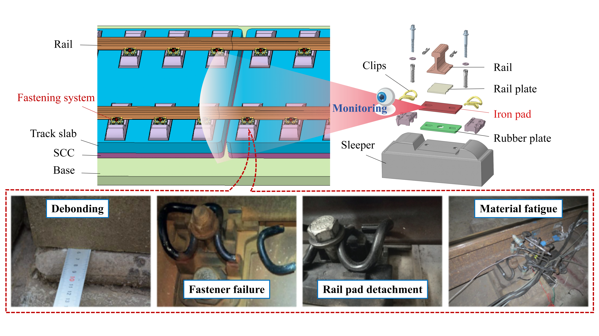
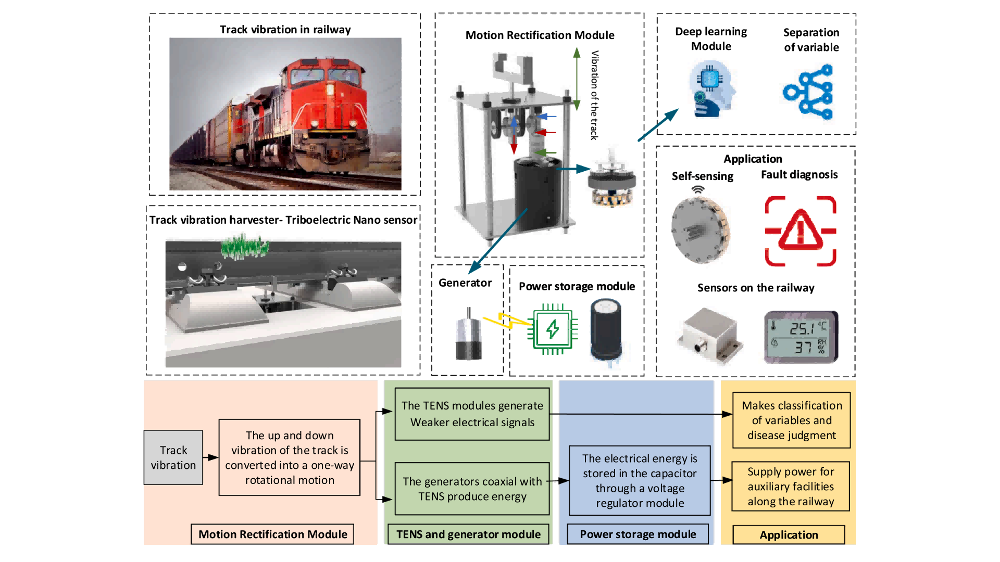
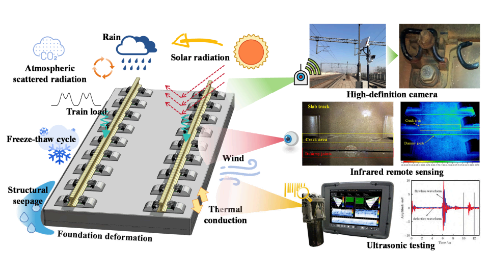
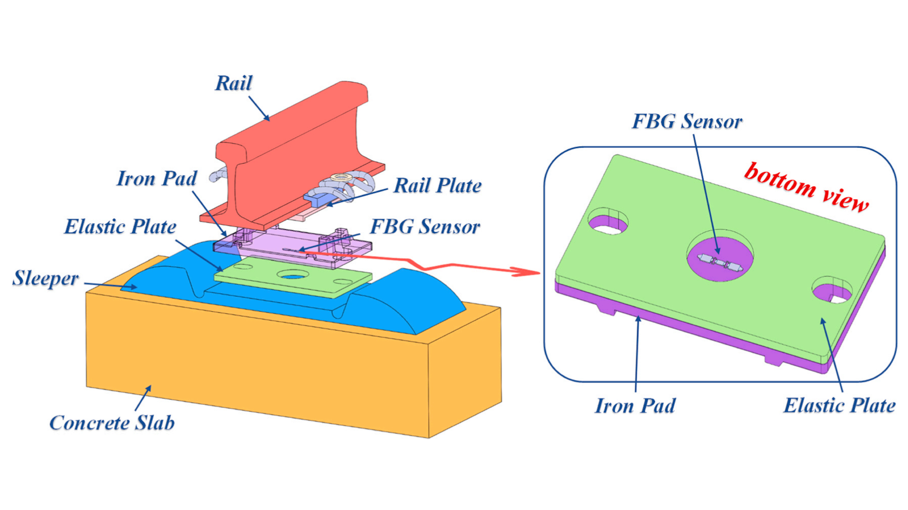
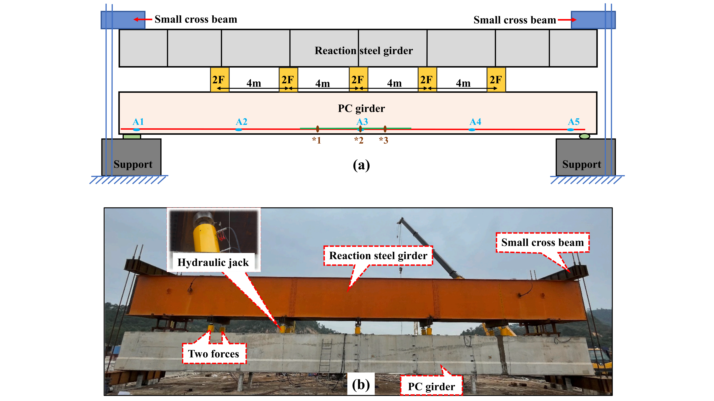
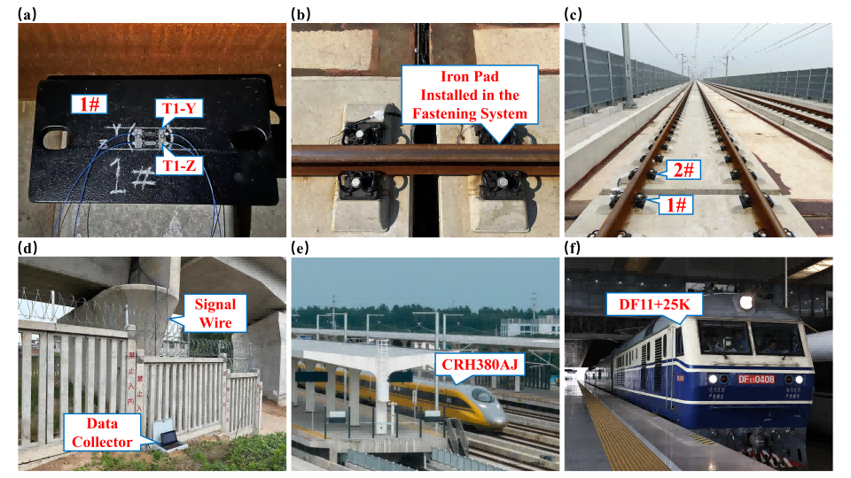

About
Research Interests
-
Structural Health Monitoring (SHM)
Application
-
Neural Operators
Technique
-
Physics-Informed AI
Strategy
-
Finite Element Method (FEM)
Foundation
Education
Sep, 2025 - Present
Doctoral Student
@ Southeast University
@ Southeast University
Major in Civil and Hydraulic Engineering.
Supervisor: Prof. Yi Zhang
Supervisor: Prof. Yi Zhang
Sep, 2022 - Mar, 2025
Master Student
@ Shanghai Institute of Technology
@ Shanghai Institute of Technology
Major in Resources and Environment.
Supervisor: Prof. Peigang Li
Supervisor: Prof. Peigang Li
Sep, 2015 - Jun, 2018
Associate Student
@ Sichuan College of Architectural Technology
@ Sichuan College of Architectural Technology
Major in Construction Management.
Experiences
Sep, 2025 - Present
Researcher
@ National Key Laboratory of Safety, Durability and Healthy Operation of Long Span Bridges
@ National Key Laboratory of Safety, Durability and Healthy Operation of Long Span Bridges
Investigating the damage evolution mechanisms and resilience assessment of vehicle-track-bridge (VTB) systems under extreme service environments.
Feb, 2025 - Present
Specializing in multi-physics coupling simulation and durability analysis for civil engineering structures.
Mar, 2018 - Mar, 2021
Assistant Engineer
@ Chengdu Construction Engineering Group
@ Chengdu Construction Engineering Group
Responsible for on-site construction management and technical coordination.
Publications

Failure assessment of typical defects in ballastless track structures based on iron pad response
Research Article
JCR Q1
IF: 5.7
First Author
Engineering Failure Analysis,
2026,
Vol. 185, Article 110417
DOI:
10.1016/j.engfailanal.2025.110417

A self-powered triboelectric nanosensor based on track vibration energy harvesting for smart railway
Research Article
JCR Q1
IF: 7.0
Sustainable Energy Technologies and Assessments,
2025,
Vol. 75, Article 104203
DOI:
10.1016/j.seta.2025.104203

A damage evaluation method for track structures based on iron pad strain
Research Article
JCR Q1
IF: 5.7
Corresponding Author
Engineering Failure Analysis,
2025,
Vol. 171, Article 109358
DOI:
10.1016/j.engfailanal.2025.109358

Research on the Monitoring and Evaluation Method of Ballastless Track Service Condition Based on Iron Pad Dynamic Strain
Master's Thesis
DOI:
10.27801/d.cnki.gshyy.2024.000002

A refined track dynamic model considering the bending properties of iron pad: Proposal and validation
Research Article
JCR Q1
IF: 5.7
First Author
Engineering Failure Analysis,
2024,
Vol. 165, Article 108780
DOI:
10.1016/j.engfailanal.2024.108780

Application research on FRP-OFBG bars in static load test for maglev guideway prestressed concrete girders
Research Article
JCR Q1
IF: 5.6
Measurement,
2024,
Vol. 232, Article 114720
DOI:
10.1016/j.measurement.2024.114720

A monitoring method of rail fastener reaction force based on iron pad strain
Research Article
JCR Q1
Top
IF: 8.0
Corresponding Author
Construction and Building Materials,
2024,
Vol. 418, Article 135169
DOI:
10.1016/j.conbuildmat.2024.135169
GitHub
Mingyu Wang/Coming-Soon
Planned
This project is currently under development. The source code will be released upon publication.
Mingyu Wang/Research-Works
Preparing
Future repository for Structural Health Monitoring (SHM) research and datasets.
Honors & Awards
-
SEU Innovation Capability Enhancement Plan for Doctoral Students
2026
Southeast University (Grant: CNY 48,000) -
Third Prize, Transport Infrastructure Structural Monitoring Innovation Competition
2025
China Highway and Transportation Society -
Outstanding Graduate
2025
Shanghai Institute of Technology -
National Scholarship for Postgraduates
2024
Ministry of Education of the People's Republic of China (Grant: CNY 20,000) -
Academic Scholarship
2024
Shanghai Institute of Technology (Grant: CNY 10,000) -
Academic Scholarship
2023
Shanghai Institute of Technology (Grant: CNY 6,000) -
Academic Scholarship
2022
Shanghai Institute of Technology (Grant: CNY 6,000)
Academic Services
Society Memberships
- Member, American Society of Civil Engineers (ASCE)
- Member, American Concrete Institute (ACI)
- Member, China Civil Engineering Society (CCES)
- Member, Chinese Optical Society (COS)
Journal Reviewer
- Reviewer for Measurement 3 reviews
- Reviewer for Journal of King Saud University - Engineering Sciences 1 review
- Reviewer for Scientific Reports 2 reviews
- (Total: 6 verified reviews)
Visitor Analytics
The visualization below illustrates the real-time global distribution of visitors to this academic homepage. It tracks the geographical sources of web traffic, reflecting the international reach and impact of the research works presented here.
Data source: ClustrMaps. The 3D globe updates dynamically based on the latest IP locations of incoming visitors.